DeFi 课程（2024 版）学习笔记 ¶
约 7744 个字 59 张图片 预计阅读时间 26 分钟
本文是我 2024 年在 B 站学习梁培利老师的公开课程《DeFi 课程（2024 版
） 》时整理的学习笔记。课程以 Uniswap 为核心，系统梳理了 DeFi 领域的关键概念与协议原理，涵盖稳定币、去中心化交易所、借贷协议等主题。笔记中保留了课堂要点、案例分析以及我个人的一些补充说明，希望对同样在学习 DeFi 的朋友有所帮助。
📢 课程更新提示：该课程 2025 年已推出最新版——《Uniswap 专题：从 V1 到 V4
课程视频：https://space.bilibili.com/220951871/lists/2824381
课程幻灯片和讲义：https://github.com/liangpeili
第 1 课 - DeFi 课程简介 ¶
区块链应用的常见分类：
- DeFi：Uniswap/AAVE/Curve/DAI/Compound 等；
- GameFi：从 CryptoKitties 开始；
- SocialFi：nostr/Damus/friend.tech；
- 国内目前政策：去 Fi 留 block，服务实体经济；
CeFi 的主要组成机构与职能：
- 中央银行：发行法定货币；
- 商业银行：存款、结算、信贷等；
- 保险公司：风险转移与分散；
- 证券公司：证券买卖、交易，证券承销等；
- 银监会、证监会和保监会；
- 国家金融监督管理总局；
CeFi 的特点：
- 集中的账户管理；
- 交易审查与监控；
- 基于对机构的信任；
- 手续费作为主要利润来源；
- 不透明性 / 信息差；
穷人死于 P2P、中产死于理财，富人死于信托。
DeFi 能做什么：
- 全球支付；
- 交易；
- 理财；
- 借款；
- 贷款；
- 衍生品；
DeFi 的特点：
- 账号个人管理：Not your keys, not your coins；
- 无需许可；
- 开源可验证；
- 可编程性；
注意：目前国内并没有做纯 DeFi 的政策空间。
课程安排：
- 以 Uniswap 为核心，梳理 DeFi 领域的上下游产品及其原理；
- 从稳定币入手，逐步介绍去中心化交易所 Uniswap 的核心逻辑，进而扩展到其他领域 DeFi 产品（如借贷等）和算法；
- 理论课 24 学时 + 实验课 8 学时；
- 《区块链应用系统开发实践》32 学时；
梁老师的一个小野心：把这个课程做成中文圈里最好的。
第 2 课 - 稳定币：USDT/USDC/BUSD¶
货币的演化：
- 实物货币；
- 金属货币；
- 基于黄金等贵金属抵押的法定货币；
- 基于信用的法定货币；
- 电子货币；
- 数字货币？
通货膨胀有利于经济发展，而通货紧缩不利于。
稳定币：沟通赛博空间和现实世界的桥梁
- 加密货币的波动太大；
- 相比加密货币，人们更相信法币；
- 在加密货币世界，也需要价值锚定；
稳定币的类型：
- 基于法币锚定的稳定币：USDT/USDC/BUSD 等；
- 基于加密资产超额抵押的稳定币：DAI；
- 基于算法的稳定币（算法稳定币
） ：UST/Frax 等；
基于法币抵押的稳定币 -- USDT
- 稳定币市值排名第一；
- 由 Tether 发行；
- 中心化管理；
There are five steps in the lifecycle of Tether tokens：
- 一个经过 KYC 认证的个人或机构可以充值法币到 Tether 公司持有的银行账户中；
- Tether 公司发行 USDT 到这个用户或公司提供的地址，Tether 公司转给用户的数量和用户充值给 Tether 公司银行账户的数量一样；
- 用户持有 USDT 就可以拿这个去参与链上产品，比如说存储、理财、交换等；
- 用户如果不想再持有 USDT 了，可以在 tether.to 上转回去；
- Tether 公司把法币从自己公司转到用户的银行账户上，并销毁链上对应数量的 USDT；
💡 Tether 公司将近 100 人，2023 年第四季度净利润近 200 亿人民币；同期的小米公司员工超过 3 万人，净利润近 49 亿人民币。
区块链公司跟互联网公司的区别：区块链公司不需要很多人，那它需要什么样的人？在这个行业待下去的收益是互联网的很多倍。
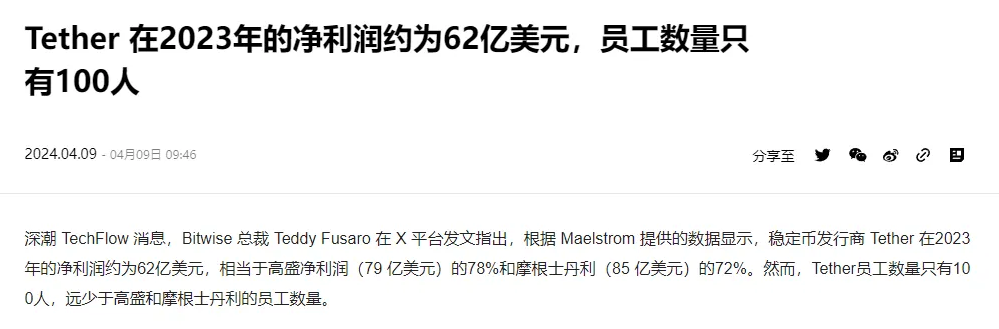

基于法币抵押的稳定币 -- USDC
- 稳定币市值排名第二；
- 由 Circle 管理和发行；
基于法币抵押的稳定币 -- BUSD
- Paxos 发行的美元稳定币；
- 受纽约金融服务局 NYDFS 的监管；
- 用了 Binance 的品牌；
- 可以 1:1 购买和赎回；
- 100% 的美元或者美元现金等价物支撑；
- 仅在以太坊发行；
- 2023 年 2 月份停止发行；
第 3 课 - 稳定币：DAI/AMPL¶
基于加密资产超额抵押的稳定币 -- DAI
- DAI 是 Maker Protocol 的主要产品；
- Maker Protocol 由 MakerDAO 管理；
- MKR 是 MakerDAO 的治理代币；

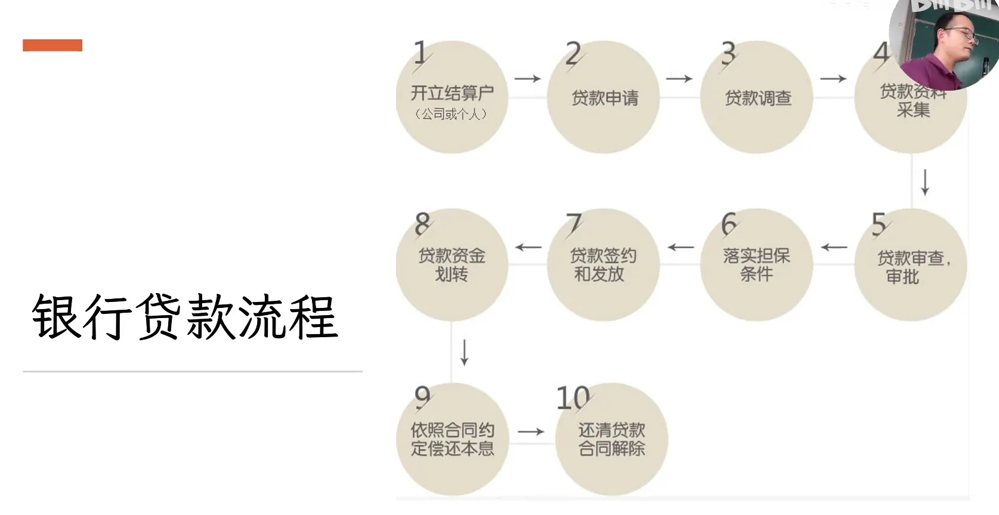

DAI 的供应量控制：
- 贷款利率：Stability Fee
- 存款利率：DAI Saving Rate（DSR）
- 如果 1 DAI = 0.99 USD，提高利率；
- 如果 1 DAI = 1.01 USD，降低利率；

MakerDAO 的员工数比 Tether 更少。
课后思考：研究 DAI 的盈利方式，为什么会有这么高的收入
案例分析
- 假设 1 ETH = 2000 USD，质押了 5 个 ETH 到 Maker Vault，按照 150% 的超额抵押率，最多可以借出 10000 / 150% = 6666.67 个 DAI。保险起见，用户借出 5000 DAI，其余 1666.67 为缓冲区。
- 情形 1：ETH 涨价到 3000 USD。此时 5 ETH = 15000 USD，基于 150% 的抵押率，用户最多可以借出 10000 DAI。
- 情形 2：ETH 跌到 1500 USD，此时 5 ETH = 7500 USD，7500 USD / 5000 DAI = 150%。用户面临三个选择：
- 往 Maker Vault 质押更多的 ETH；
- 还回 5000 DAI + Stability Fee，拿回 5 个 ETH；
- 还回部分 DAI + Stability Fee，增加自己的缓冲区；
DAI 的防护网之一 ——Collateral Auction
- 情形 3：ETH 跌到 1200 USD，此时 5 ETH = 6000 USD，触发清算，Keeper 介入清算流程；
- 5 个 ETH 按照市价折扣 3% 进行拍卖，每次增加 0.5%，直到拍卖成功；
- Keeper 使用 DAI 来竞拍，价高者得；
- 扣除 5000 DAI + Penalty Fee 等费用，其余 ETH 返回给用户；
DAI 的防护网之二——Maker Buffer
- Stability Fee / Penalty Fee 等缓慢积攒；
- 情形 4：ETH 跌到 900 USD，此时 5 ETH = 4500 USD，拍卖后的缺口为 500 USD；
- 从 Maker Buffer 支付 500 DAI，弥补缺口；
DAI 的防护网之三——Debt Auction
- 情形 5：ETH 跌到 900 USD，此时 5 ETH = 4500 USD，拍卖后的缺口为 500 USD，而 Maker Buffer 里只有 100 DAI，资金缺口为 400 USD。
- 增发 MKR 进行拍卖；
- 用户使用 DAI 参与拍卖，拍卖得到的 DAI 来弥补缺口；
- 这是一种对社区治理的惩罚方式；
增发 MKR 使得币的价值被稀释。
Decentralized Autonomous Organization (DAO)
- 一种新型的组织形式
- 发行治理 Token
- 治理 Token 代表投票权
- 社区共治、共建、共享
MakerDAO 的运行机制
-
提案阶段
-
- 发起提案：任何 MKR 持有人都可以发起新提案；
-
- 在 MakerDAO 社区讨论；
-
- 提交优化后的提案；
-
- Risk Team 对其进行风险评估；
-
-
投票阶段
- 一个 MKR Token 表示一个投票权，可以代理；
- 投票期一般持续 7 天；
- 根据投票结果决定是否通过
； （4% 同意）
Surplus Auction
- Maker Buffer Limit
- 超出限制后的 DAI 用来拍卖购买 MKR
- 销毁 MKR
- 一种社区治理的奖励方式
用户参与一些协议的质押，可以用来加杠杆，例如有 1 ETH，借出来一些币拿来买 ETH，再把买来的 ETH 放进去借钱，依次重复。
💡 在学习一种新的协议时，都要思考一个问题：为什么别人愿意来参与你的协议？

总结：
- 稳定币诞生的原因；
- 稳定币的类型：USDT/USDC/BUSD/DAI/AMPL；
- USDT 的中心性；
- DAI 的运行原理；
- Maker Protocol 中的清算；
- AMPL 的运行原理；
第 4 课 - ERC4626 ¶
Vault
- 资产的管理、分红
- 用户充值某项资产，获取某个凭证
- 该凭证作为分红、退出的依据
- Yield Farming / 借贷 / 质押等
https://eips.ethereum.org/EIPS/eip-4626
💡 建议研究 ERC20 提案的原始内容。
EIP 从想法到落地的流程：
- 产生一个想法；
- 提出 Proposal；
- 讨论通过后正式成为标准；
- 第三方库（例如 OpenZeppelin）根据这个标准去实现；
- 开发者使用。
第 5 课 - ERC4626（二）¶
本节课简略过了一遍 ERC4626 的实现细节，此处省略。
第 6 & 7 课 - 去中心化交易所 ¶
DeFi 领域的三大支柱：稳定币、交易所、借贷。
交易所：
- 证券交易所
- 期货交易所
-
加密资产交易所
- 中心化交易所
- 去中心化交易所
2017 年 9 月 4 日，七部门联合发布《关于防范代币发行融资风险的公告
从 2020 年开始有 DEX 这个赛道。
中心化交易所的业务模式——以币安为例
- 交易费：交易所通过提供买卖加密货币的平台来收取交易费用。有些交易所还提供高级交易选项，如杠杆交易，这通常会带来更高的费用；
- 上币费：项目方团队后面都会去找交易所上币，然而上币需要缴纳一笔数额不小的上币费；
- 量化交易：用户在交易所中，一般数字资产都是暂时存放在交易所，基本上交易所掌握所有筹码可以选择做多或者做空，交易所可以去赚取差价，而用户提币出去也能赚取手续费；
- 原生代币；
💡 梁老师举了个例子：自己了解到的一个项目，2017 年左右为了上前三的交易所，上币费为 1100 万人民币（购买交易所发行的原生代币，参与投票竞选
） 。项目方安全审计要花钱，上交易所也要花钱，而且还得通过内部关系，熟人才行。交易所特别赚钱。
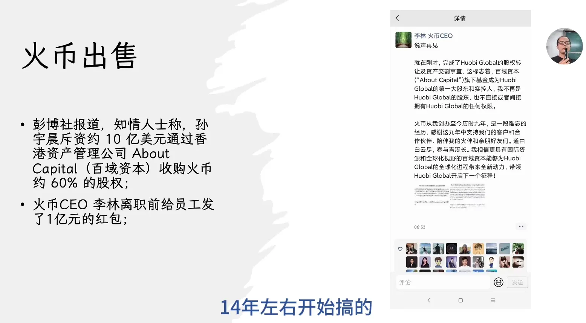
中心化交易所的交易模式——订单簿模式
- 中央限价订单簿（CLOB）就是一本由出价和报价组成的完全透明账本，从最优价开始依次排序（两边分别是参与者愿意买 / 卖的价格
） 。 - 所有的参与者都能看到所有的报价和出价，他们也可以参与其中。
- 订单簿中两边的第一行，即是最优的报价 / 出价。
订单簿模式的优劣
优势：
- 透明的流动性
- 做市商可自由出入
- 做市商可以自由决定价格与数量
劣势：
- 冷启动问题（很难给出初始流动性）
- 对非流动性资产不利
- 如果是链上交易所，则对链的 TPS 的要求很高
交易所刚开始的时候需要很大的资金量，用户玩的顺畅，才会吸引更多用户过来。
早期去中心化交易所使用订单簿的模式，但由于链上 TPS 太低，没有发展起来。

链上交易方案：自动做市商
- 出现原因：以太坊的 TPS 对于支撑链上订单簿的实时更新来说太低了。反面案例：Solana 链由于其 60K 的 TPS，其上有许多订单簿模式的交易所。
- 交易所里没有订单簿，只有一系列预设的函数，为各类货币的互相交换来定价。
- 这些预设的函数（例如 x*y=k）基于两种货币在各自流动性池中的供给变化率来设定价格。在某个货币的流动性池内，任何人都能够提供该种货币以增加其流动性，从而获得收益。
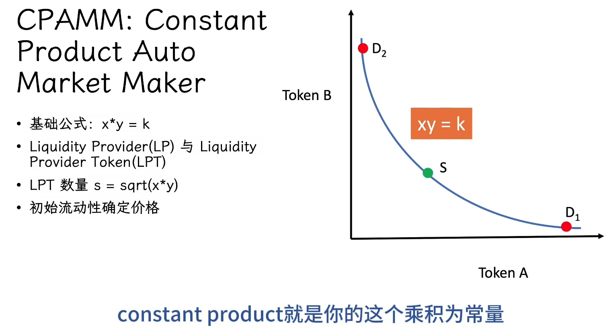
两个代币数量的乘积等于一个常量。
Vault：放一些币进去，返回一个 share，表示放进去的凭证。
用户将流动性放到一个交易池里，交易池会给用户发行一个新的 Token，叫 Liquidity Provider Token（LPT
只要有价差，就有套利空间，就会被套利机器人吃掉。

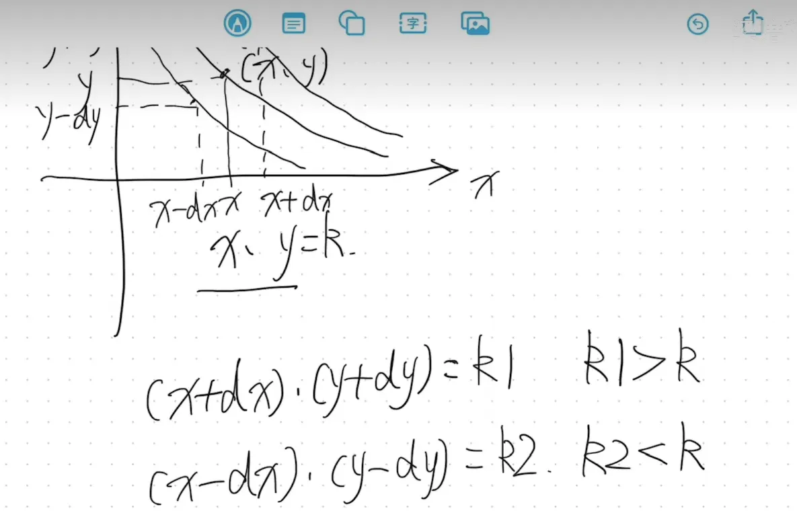
DEX 的去中心化：
- 任何人都可以添加流动性，成为 LP，并拿到 LP Token；
- LP 在任意时间可以移除流动性并销毁 LP Token，拿回自己添加的 Token；
- 用户可以使用非官方的前端页面来进行交易；
- 交易时收取一定手续费，并且分配给 LPT Holder；
提供 LP 可能亏损，需要承担无常损失的风险。
自动化做市模式的优劣：
-
优势：
- 对于新的代币，可以很方便地冷启动
- 去中心化
- 代币交换可组合性很高
-
劣势：
- 所有价格点的统一流动性（在 Uniswap V3 中已解决）
- 滑点频繁
- 波动性大，经常有很大的无常损失（流动性提供者在平均表现上是盈利的）

需要理解的是，如何基于 x*y=k 这个公式来完成添加流动性、Swap、移除流动性这三个操作以及里面的一些计算细节。写一个 CPAMM 合约，Token 如何提供，提供 Token 之后如何把 share 返回给用户，具体怎么计算，swap 是怎么算的，移除流动性是怎么算的。
添加流动性会不会影响价格？
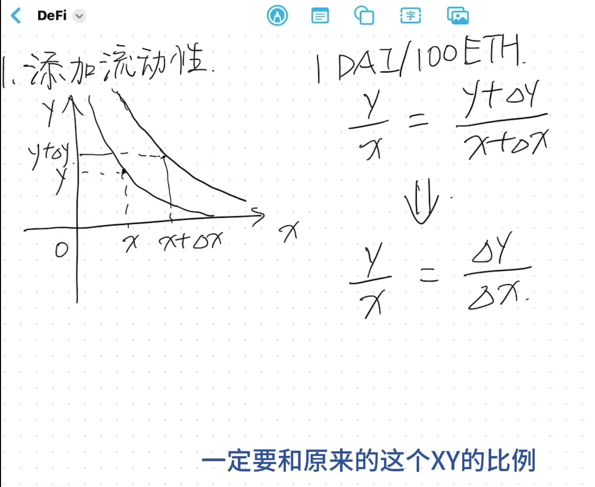
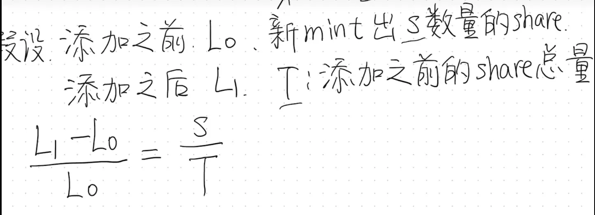
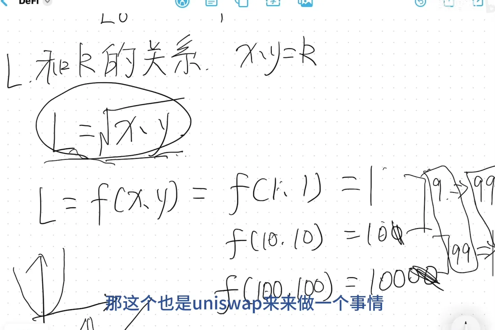
我们希望流动性的体现和添加的数量成一个线性关系。


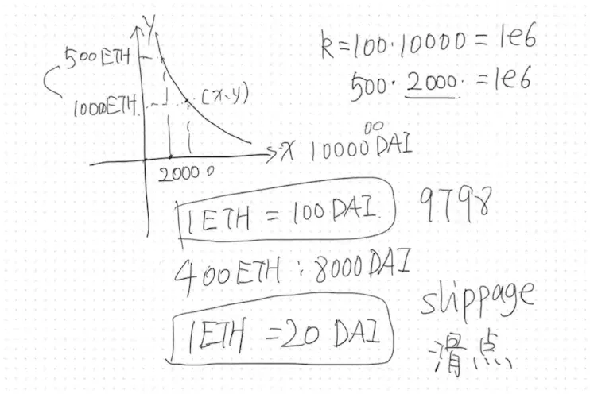
如果池子很浅，就会产生很高的滑点。
ChatGPT 补充：为什么需要链上自动做市商？¶
在中心化交易所（Binance、Coinbase 等）中使用订单簿模式，这种模式需要：
- 高频订单更新：买方和卖方不断地挂出买入和卖出订单；
- 强大的撮合引擎：一个高速、中心化的服务器来实时匹配这些买单和卖单；
- 做市商：专业的机构或个人提供流动性，通过不断报价来缩小买卖价差，让市场更高效；
如果直接把订单簿搬到区块链上（即链上订单簿
（1）性能瓶颈与高昂成本：区块链（尤其是早期的以太坊）速度慢、吞吐量低，每一笔挂单、撤单、匹配交易都需要支付 Gas 费，并需要全网节点确认。订单簿需要不断地挂单、撤单、修改订单、撮合交易，每一笔交易都需要支付 Gas 费，一旦网络拥堵，Gas 费飙升；
（2）区块链延迟高：中心化交易所的撮合延迟是微秒级，而链上的交易延迟远无法达到 CEX 水平，高延迟 + 无法实时撮合 → 订单深度会变得非常差；
（3）链上订单簿易被 MEV 抢跑：链上订单簿的订单都是公开的，MEV bot 可以看到你的订单并直接抢跑，导致用户持续受到损失，这会让订单簿体验极差；
（4）小型长尾代币没有做市商：在中心化交易中，专业做市商负责挂买单 / 卖单维持深度，依赖于高频交易和复杂的算法。链上操作成本高，没有人会主动给新代币挂单做深度，导致深度差、滑点巨大、无法交易，无法实现 " 人人可发币 " 的去中心化生态。
直接将传统金融的订单簿模式复制到区块链上，在技术和经济上都是不可行的。因此，我们需要一个全新的、为区块链原生设计的交易模式。
AMM 的理念非常简单但革命性：让流动性池（Liquidity Pool）自动报价，无需订单簿或做市商。
例如 Uniswap 的 x*y=k 模型：
- 用户把 Token A 和 Token B 存进池子
- 池子用公式自动给出价格
- 和池子交易即可，不需要对手盘
AMM 本质上：
- 用算法提供流动性
- 用代币池子替代订单簿
- 用 LP（流动性提供者）替代专业做市商
第 8 课 - Uniswap 简介 ¶
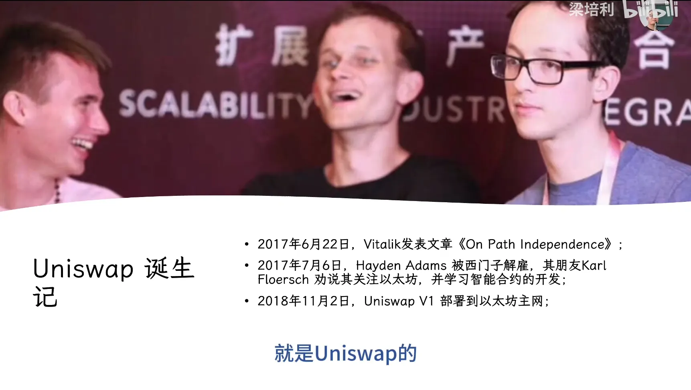
On Path Independence：https://vitalik.eth.limo/general/2017/06/22/marketmakers.html
A Short History of Uniswap：https://blog.uniswap.org/uniswap-history
Uniswap Whitepaper V1：https://hackmd.io/@HaydenAdams/HJ9jLsfTz
Uniswap V1：
- 2018 年 11 月 2 日发布；
- 使用 Vyper 语言编写；
- 仅支持 ERC20-ETH 直接互换或者通过 ETH 进行互换（Chained-swap
） ； - 合约地址：https://github.com/Uniswap/v1-contracts/tree/master/contracts

Vitalik 的 "On Path Independence" 是 2017 年 6 月份发表的，2018 年 11 月才有人正式地用五六百行代码把文章的主要思想实现出来。现在觉得很简单，但回头看的话，也不太容易。好比万有引力公式，现在看很简单，但前人发现这个公式用了几百年。
Uniswap v2 Overview：https://blog.uniswap.org/uniswap-v2【March 23, 2020】
Uniswap V2：
- 2020 年 5 月发布；
- 增加 ERC20 - ERC20 直接互换；
- 增加 Flash Swap；
- 增加 Oracle；
- 改进手续费收取方式；
- 引爆了 DeFi 赛道；
- 2020 年 9 月，发行治理代币 UNI；
2020 年 5 月份 Uniswap V2 发布，引爆了 DeFi 赛道。
Sushi 克隆 Uniswap 源码，Yield Farming，吸血攻击，导致 Uniswap 空投 UNI。
💡 区块链圈，不要光关注技术和产品逻辑，仅仅只是八卦就可以发现很多素材，每一个新闻背后都有故事。
Uniswap V2 的核心合约
-
Uniswap V2 Core
- UniswapV2Pair.sol
- UniswapV2Factory.sol
-
Uniswap V2 Periphery
- Router contract
- Library contract
Uniswap vs SushiSwap
- 2020 年 8 月 28 日，SushiSwap 发布；
- SushiSwap fork 了 Uniswap，并且做了一些改进；
- SushiSwap 增加了奖励系统，从 Uniswap 吸引走许多流动性；
- 作为回击，2020 年 9 月 Uniswap 宣布发行 UNI 作为治理代币；
Introducing Uniswap v3：https://blog.uniswap.org/uniswap-v3【March 23, 2021】
Uniswap V3
- 2021 年 3 月，Uniswap V3 发布；
-
主要特性：
- 增加集中流动性；
- 优化手续费设置；
- LPT 改成基于 NFT 的 Liquidity Token；
- 改进开源协议；
V2 的流动性没有集中，任何价格都覆盖，但其实一个 Token 的波动通常只局限于一个范围，在范围之外做流动性是浪费的。
V2 中添加流动性获得的 share 是 ERC20 版本，在 V3 中是 NFT。有了集中流动性后，每个人添加的价格范围可能不一样，例如 A 添加 ETH 流动性的区间是 2800~3200$，而 B 是 3600~4000$。
V2 源码被克隆抄袭，V3 源码协议不允许克隆商用，有效期 2 年。
Our Vision for Uniswap v4：https://blog.uniswap.org/uniswap-v4【June 13, 2023】
【补充】UNIfication：https://blog.uniswap.org/unification【November 10, 2025】
Uniswap V4
- 2023 年 6 月 23 日发布代码草案；
-
新增主要特性：
- Hook
- Singleton Pool Manager Design
- Reintroduction of Native ETH
- Flash Accounting
-
目标：更快、更省 Gas Fee，容易集成；成为 DeFi 领域的基础设施；
Hook 的应用举例：在每一次 swap 前验证 KYC；像股票交易所一样设置交易时间限制（节假日、周末停盘
在 V2 中只支持 ERC20 之间的转换，ETH 与其他 ERC20 Token 的转换都需要先换成 WETH（即 ETH 的 ERC20 版本
DeFi 领域有很多东西可以像搭积木一样叠加，把别人做好的东西作为自己应用的一个模块。Uniswap V4 就想往这方面发展，成为 DeFi 领域的基础设施。
Pancakeswap 是 BSC 上最大的 DEX。
Uniswap VS Binance
- 无须实名认证
- 代码开源
- 上币不收费
- 用户自己管理资金，不用托管到交易所
- 社区治理
Not your keys, not your coins.
第 9 课 - Uniswap V2 的手续费计算 ¶
Uniswap V2 Whitepaper：https://uniswap.org/whitepaper.pdf
在 Uniswap V1 中，每一笔交易就扣一个手续费。
💡 梁老师提到白皮书中的 Chapter 2.4 节有点难理解。
通过增发 share 的方式把手续费给项目方

通过使 \(S_1\) 增值的方式把手续费给 LP
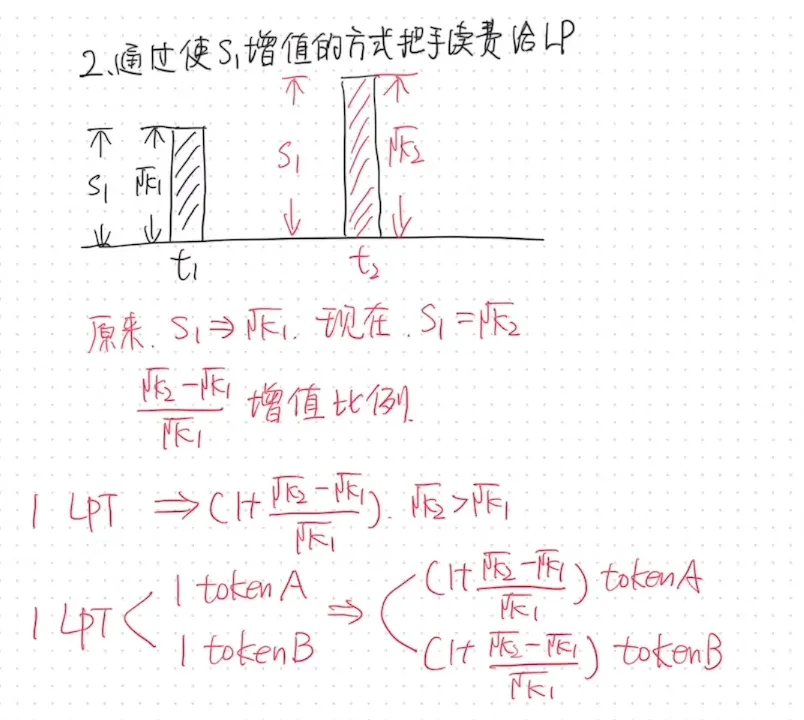
项目方想分走手续费里的一定比例

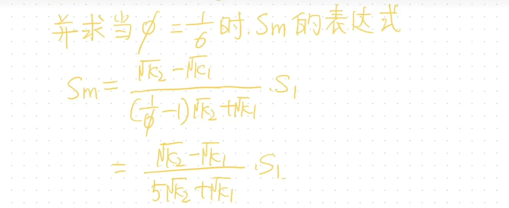
| 方式 | 谁拿走 swap 产生的价值增加？ | share 是否增发？ | Uniswap 是否采用？ |
|---|---|---|---|
| 1. 增发 share → 给项目方 | 项目方拿手续费（protocol fee） | 是，mint LPT | ✔（V2 feeTo 模式） |
| 2. S₁ 增值 → 给 LP | 全部手续费给 LP | 否 | ✔（默认无 protocol fee） |
| 3. 抽走 φ 比例 | φ 给项目方，1−φ 给 LP | 是 | ✔（V2 支持 φ = 1/6） |
三者是同一套数学，用不同视角表达。
参考资料：How Uniswap V2 computes the mintFee
💡 收取手续费不是在 swap 时收，而是在添加和移除流动性时收，带来 shares 总量的 mint 或者 burn。
第 10 课 - Uniswap V2 里的 TWAP ¶
本节课程包含较多代码演示。
Uniswap V2 链上价格预言机
【GPT-4o】TWAP（Time-Weighted Average Price，时间加权平均价格）是 Uniswap V2 中引入的一种机制，为了解决去中心化交易所中瞬时价格易受操纵的安全隐患，通过时间加权平均价格来提供更稳定的价格数据。它大大降低了短期价格操纵的风险，并为 DeFi 协议提供了一个更加可靠的价格预言机。
(1) 为什么要引入 TWAP？
在去中心化交易所（如 Uniswap）上，瞬时价格是由流动性池中代币的供需关系决定的。因此，在没有 TWAP 之前，这种瞬时价格可以在短时间内被操纵者影响，使得 DeFi 协议在依赖 Uniswap 的价格预言机时存在安全隐患。
例如，如果某个协议基于 Uniswap 上的即时价格来清算借款或执行套利交易，那么攻击者可能通过一个短暂的、大规模的交易瞬间改变池中的价格，从而使协议误以为价格发生了大幅波动，这种攻击被称为 " 闪电贷价格操纵攻击 "（flash loan price manipulation
为了防止这种问题，Uniswap V2 引入了 TWAP 机制，通过计算一个时间段内的平均价格来提供更可靠的价格信息。这样，协议可以依赖这个平均价格，而不是瞬时的市场价格，从而大大减少了短时间内价格波动带来的风险。
(2) TWAP 工作原理
Uniswap V2 的 TWAP 是基于累积价格的机制来实现的。每个交易对的价格会在每个区块内更新一次，这个价格基于池中的代币数量（X 和 Y）的比值。
具体来说，Uniswap V2 追踪两个代币对之间价格的累积值：
- 每个区块结束时，Uniswap 会记录当前的价格乘以自上次更新以来经过的时间，并将其累积。
- 累积价格随着每个区块不断增长，因此计算价格的时间越长，累积的价格值就越大。
为了计算某一时间段的平均价格（即 TWAP
- 记录开始时间的累积价格。
- 记录结束时间的累积价格。
- 用结束时间的累积价格减去开始时间的累积价格，然后除以时间差（区块数
） ，得出这段时间内的平均价格。
通过这种方式，Uniswap V2 让用户能够基于区块链的历史数据计算任意时间段的加权平均价格，而不是依赖瞬时价格。
示例：假设某个交易对是 ETH/DAI，我们想要在过去 6 小时内计算 ETH 的时间加权平均价格。假设每个区块的平均出块时间为 15 秒，因此 6 小时大约包含 1440 个区块。
- 在区块高度
N处，我们记录下 ETH/DAI 的累积价格P1。 - 6 小时后，在区块高度
N + 1440处，我们记录下新的累积价格P2。 - TWAP 的计算公式为：\(TWAP = \frac{P2 - P1}{1440}\)
这个结果就是过去 6 小时内 ETH/DAI 的时间加权平均价格。
(3) 可能导致的问题
- 延迟性：TWAP 是一个历史价格的平均值，因此它无法快速反映出市场的瞬时变化。在价格剧烈波动时（如市场突然崩盘或大幅上涨
） ，TWAP 可能无法提供及时的市场价格。这意味着依赖 TWAP 的协议可能在极端情况下做出错误决策，因为价格滞后。 - 计算复杂度：对于较长时间的 TWAP 计算，尤其是当需要跨越多个区块时，可能需要读取大量的链上数据，增加了计算成本。这对于高频交易或依赖频繁价格更新的协议来说，可能并不适用。
- 攻击可能性：虽然 TWAP 解决了短期内的价格操纵问题，但攻击者仍可能通过长时间的资金操控影响 TWAP。例如，攻击者可以在多个区块内不断调整池中的代币数量，影响累积价格，从而逐步改变 TWAP 值。这种攻击需要更大的资本和更长的时间，但并不是不可能。
- 价格操控的潜在窗口：TWAP 虽然能防止单个瞬间的价格操控，但在一定时间窗口内，攻击者仍有可能影响价格。例如，如果攻击者知道某个协议将在未来某个时间点依赖 TWAP 进行结算或清算操作，他们可以在 TWAP 计算的关键时间窗口内影响价格，造成一定时间段内的价格偏差，从而实现利益最大化。
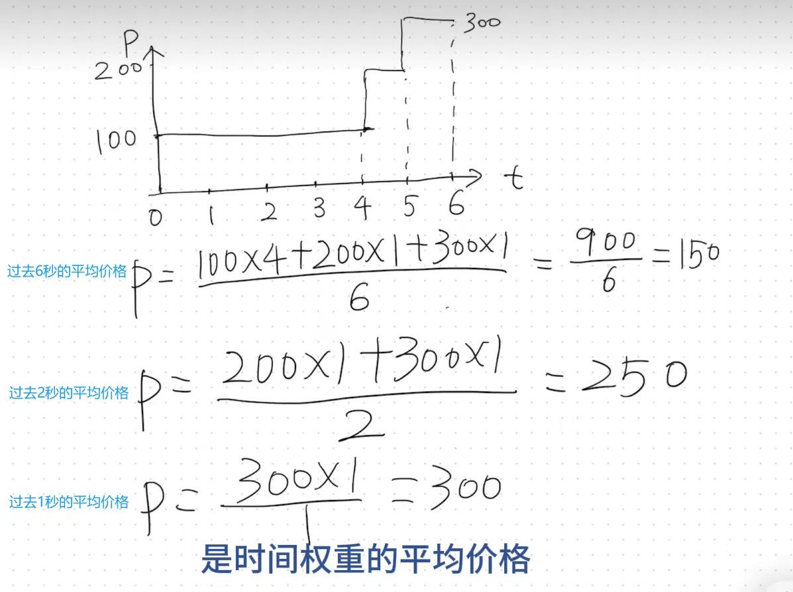


https://github.com/Uniswap/v2-core/blob/master/contracts/UniswapV2Pair.sol

💡 Uniswap V2 是使用 Solidity 0.6.6 版本编写的。
Uniswap 中没有实现上面计算 "\(T_k\) -> \(T_n\) 的 AP" 公式中的分母部分，因为不可能记住过去所有时间的 price（每次更新都需要花 Gas，Uniswap 不会去记录这个事情
（课堂代码演示部分省略）v2-twap.sol 大概 90 行代码，TokenA.sol、TokenB.sol
【课程实验】TWAP 实验：自己部署 Uniswap V2 合约，实现 TWAP。
💡 Fixed Point 是 Uniswap 自己独创的一个数据类型，UQ112.112 格式。
分别部署 TokenA、TokenB，各自发行 1e26 个，通过 UniswapV2Router02.sol 合约操作。
第 11 课 - Uniswap 里的 Flash Swap ¶

💡 Flash Swap 是 DeFi 才有的东西，传统金融没有这类机制。
【GPT-4o】Flash Swap 允许用户 " 先借代币再付款 "，而这笔付款只在交易的最后时刻进行。如果用户无法偿还借出的代币，那么交易将回滚，之前发生的所有操作都将被撤销。
核心代码位于 https://github.com/Uniswap/v2-core/blob/master/contracts/UniswapV2Pair.sol 合约的 swap() 函数。
课堂演示的 FlashSwap.sol：https://github.com/liangpeili/defi-2024/tree/main/Flash_swap
课外阅读：Flash Loans and how to hack them: a walk through of ERC 3156
Flash Loan 和 Flash Swap 本质上是一回事（在一笔交易里完成借和还
第 12 课 - Uniswap V2 的无常损失计算 ¶
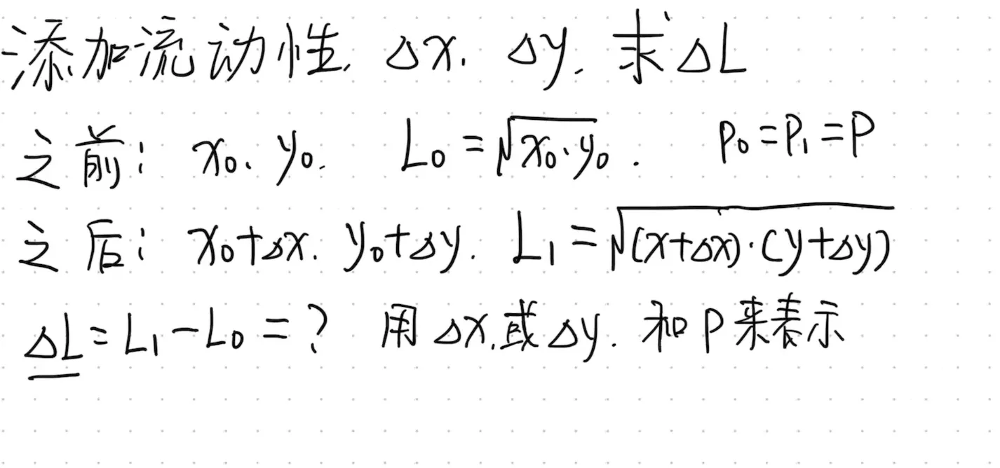

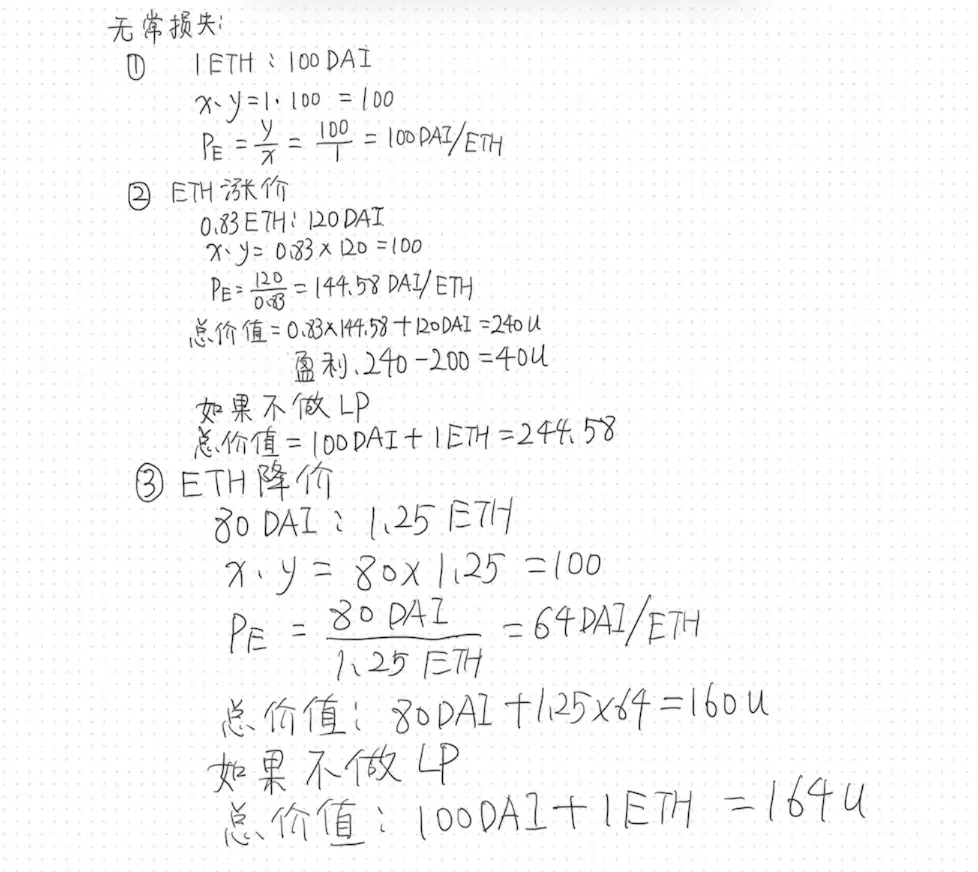
做 LP，无论 Token 是涨价还是降价都会导致资产比不做 LP 要少一些，这个就叫无常损失（Impermanent Loss
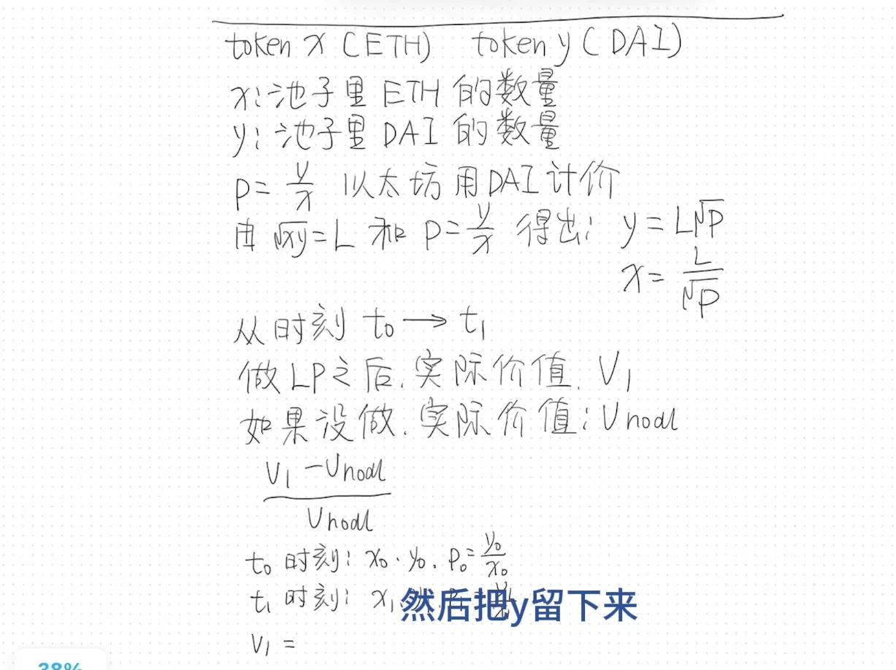
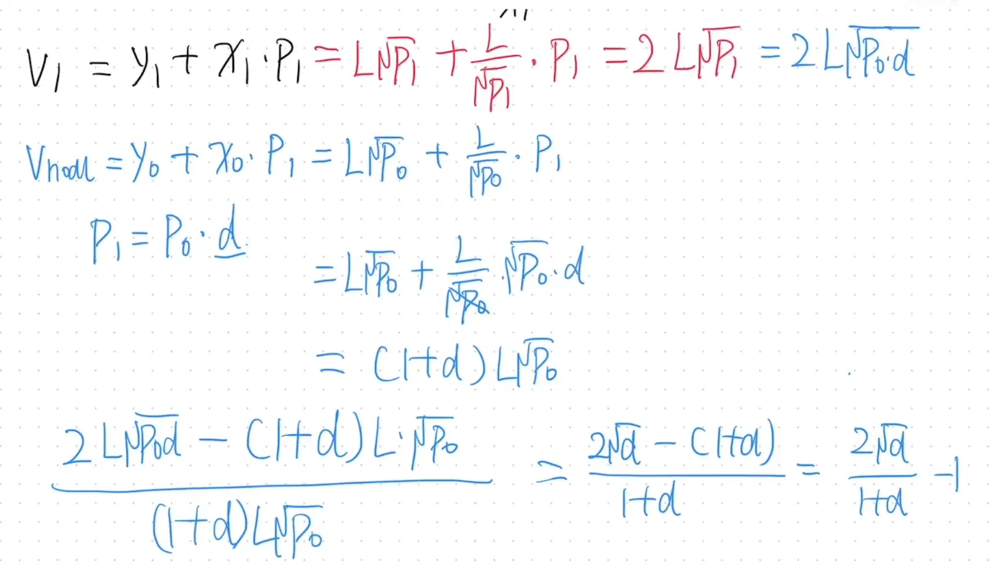
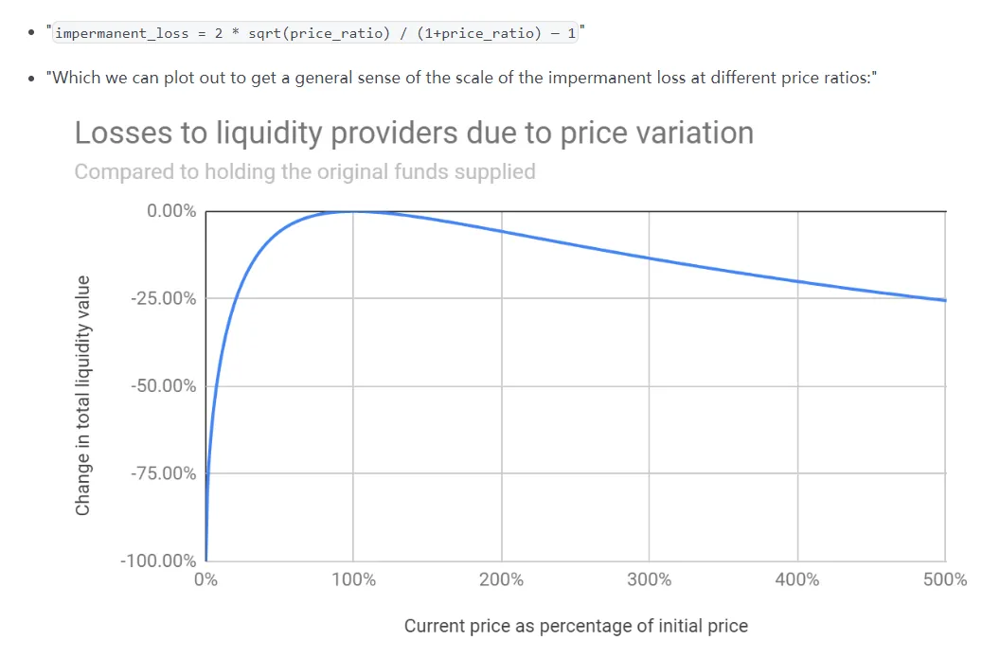
Ivan Kuznetsov《Programming DeFi: Uniswap V2》 系列教程：
https://jeiwan.net/posts/programming-defi-uniswapv2-1/
https://jeiwan.net/posts/programming-defi-uniswapv2-2/
第 13 课 - Staking Reward 原理及实现 ¶
这堂课质量很高，需要用心去理解。

项目方设定好时间周期以及奖励总量。

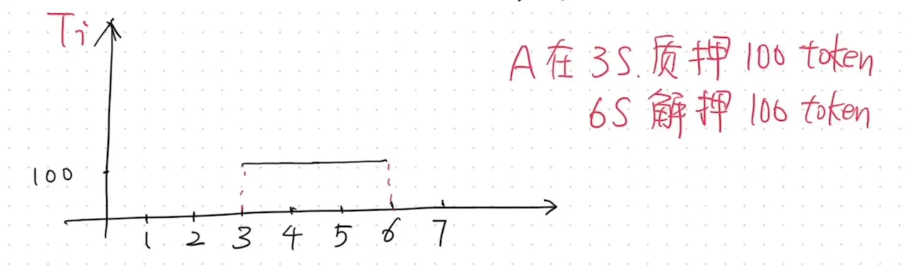
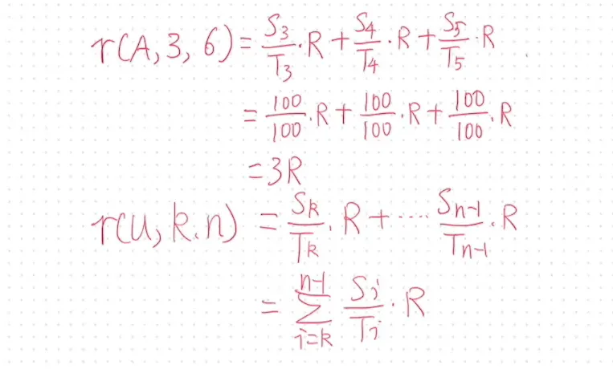
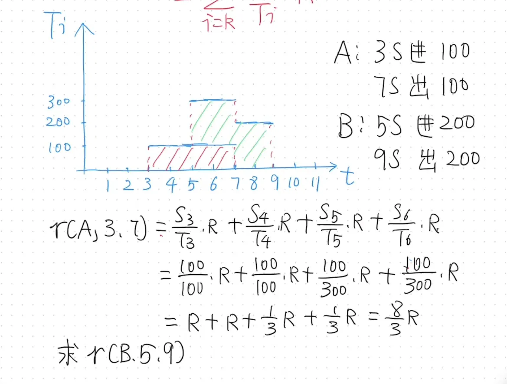
如果有一万个用户，用智能合约来表示之后，不可能每秒钟更新一次余额。质押和解除质押操作都不是高频操作，关键在于能否写成时间复杂度为线性的智能合约算法。
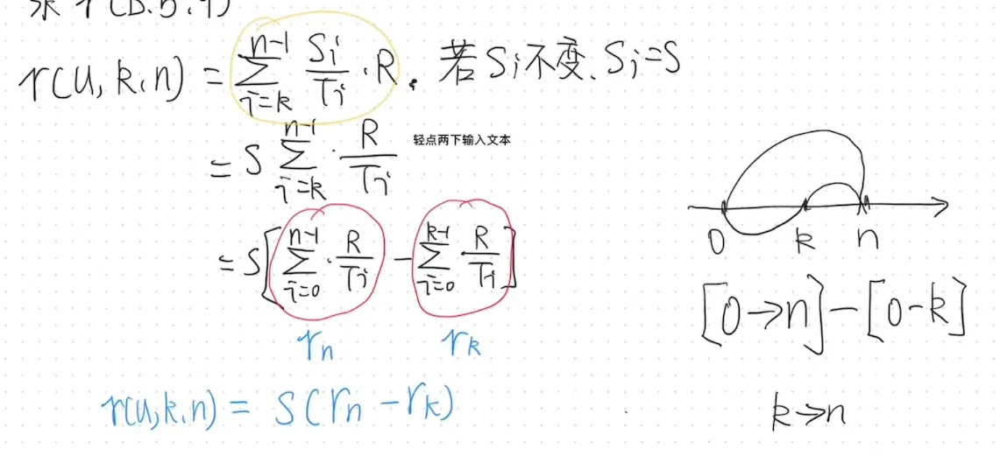
某个时间段内，单位 Token 质押得到的奖励——即 Reward Per Token。
用户 u 从第 k 到 n 秒之间得到的奖励 = 质押的数量 ×（单位数量从 0 到 n 的奖励 - 单位数量从 0 到 k 的奖励）

能否化简 rn？

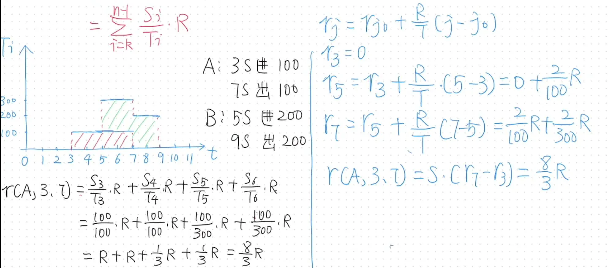
对整个项目来说，只需要记录几个值就行了。
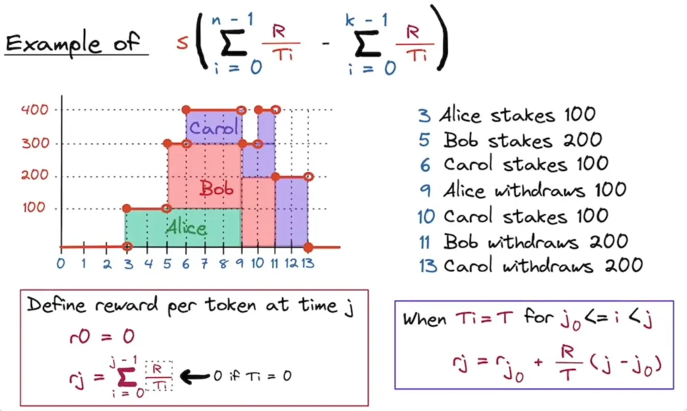
图片来源：Staking Rewards - Math, Examples and Algorithm | DeFi
推荐 Youtuber @smartcontractprogrammer 的 DeFi 系列视频，是很赞的一个英文视频讲解系列。
计算 r(B, 5, 11) 和 r(C, 6, 13)

StakingReward.sol 代码演示（约一百来行代码
第 14 课 - Uniswap V3 简介 ¶
Uniswap V3 白皮书：https://app.uniswap.org/whitepaper-v3.pdf
Introducing Uniswap v3：https://blog.uniswap.org/uniswap-v3【March 23, 2021】
2021 年 5 月，Uniswap V3 发布，主要特性：
- 增加集中流动性
- 优化手续费设置
- TWAP 优化
- 改进开源协议
V3 开源许可证要求的两年代码保护期在 2023 年到期了。
Uniswap V2 资金利用效率低，做 LP 风险很大。
如果代币价格剧烈波动，用户承受无常损失的风险较大，所以对于波动剧烈的 Token 来说，应该收取更高的手续费来弥补 LP 的损失。
V3 的核心改进：在某个价格范围之内去做流动性。
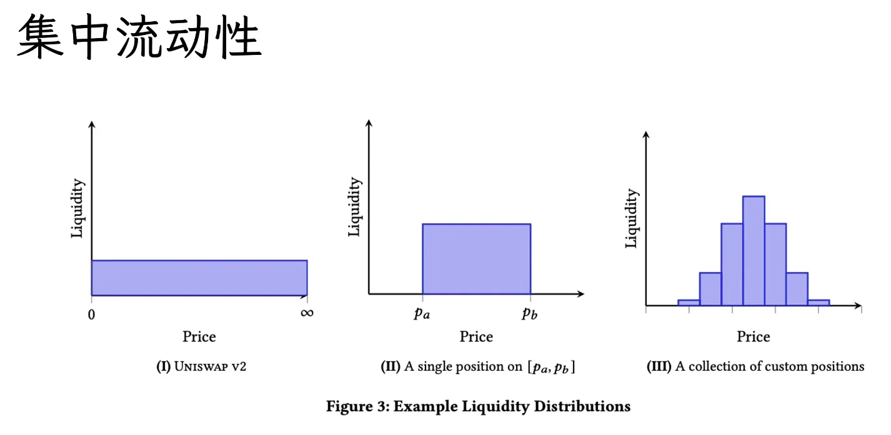
Uniswap 查看流动性地址：https://app.uniswap.org/explore/pools
Uniswap V3 因为有集中流动性的引入，每个用户可以选择在自己认可的一个价格区间去做流动性，最后综合的结果就如下所示：

很多用户认为以太坊还会再涨，所以就提前到未来这个价格区间内去做流动性。用户做流动性被交易使用到了才能赚手续费。
思考问题：
（1）在 ETH 价格高的位置埋伏了一个单子，只需要提供 ETH，为什么？
（2）在 ETH 价格低的位置埋伏了一个单子，只需要提供 USDT，为什么？
（3）Uniswap V3 因为提供了 Range Order 订单，用户可以把它作为限价订单去使用，怎么理解？
Uniswap V3 可以在同一个 Pool 中提供多个价格范围之内的流动性。

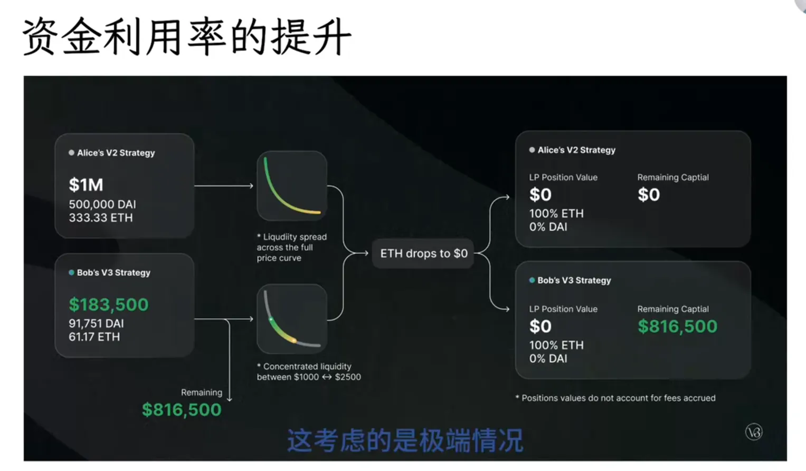
手续费的收取：
- 针对不同的交易对，设置不同的梯度
- 0.01%, 0.05%, 0.30% 和 1.00%
- 管理费可以收取手续费的 10%-25%
https://docs.uniswap.org/concepts/protocol/range-orders
【GPT-4o 补充】
区间订单（Range Orders）是 Uniswap V3 中的一种新型交易方式，允许流动性提供者（LP）通过在特定价格区间内提供流动性来实现类似限价单（Limit Order）的效果。
传统的限价单 vs 区间订单：
- 传统限价单：比如你想以某个特定的价格买入或卖出某个资产，你设置一个限价单，当市场价格达到你的限价时，交易会自动完成。
- Uniswap V3 的区间订单：用户将待交易资产设置在特定的价格区间内，当市场价格达到该区间时自动完成交换，类似限价单的效果。而且 Uniswap V3 的区间订单不需要等待另一方来下单交易，而是直接与流动性池（AMM）进行交易。
Uniswap V3 通过引入区间订单和集中流动性，使得用户能够像在传统交易所中设置限价单一样，实现特定价格区间内的资产交易。
第 15 课 - Uniswap V3 的集中流动性 ¶
实际上只需要提供 x_real 和 y_real 的两个 Token，就可以维持价格 Pc 在 Pa 和 Pb 之间波动。
虚拟流动性：限定范围后，通过提供更少的 LP，就可以达到在 Uniswap V2 里面更多的 LP 的效果。


Uniswap V3 的模拟器：可以模拟不同的价格流动性、不同价格范围，和 V2 进行对比。
https://www.desmos.com/calculator/6si0vmgwhc?lang=zh-CN


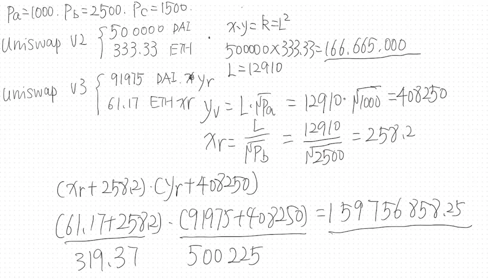
第 16 课 - Uniswap V3 的流动性计算 ¶
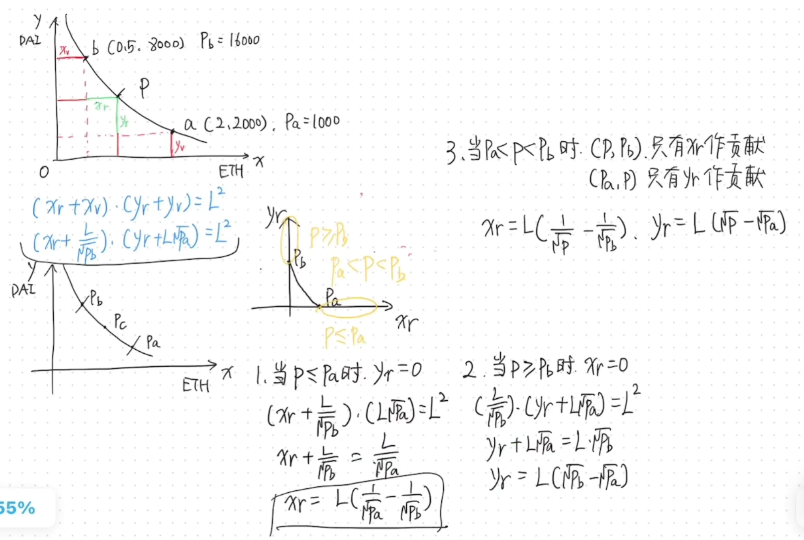
第 17 课 - Uniswap V3 的无常损失计算 ¶
（本节笔记待补充）
第 18 课 - Uniswap V4 简介 ¶
（本节笔记待补充）
第 19 课 - 去中心化借贷 ¶
（本节笔记待补充）